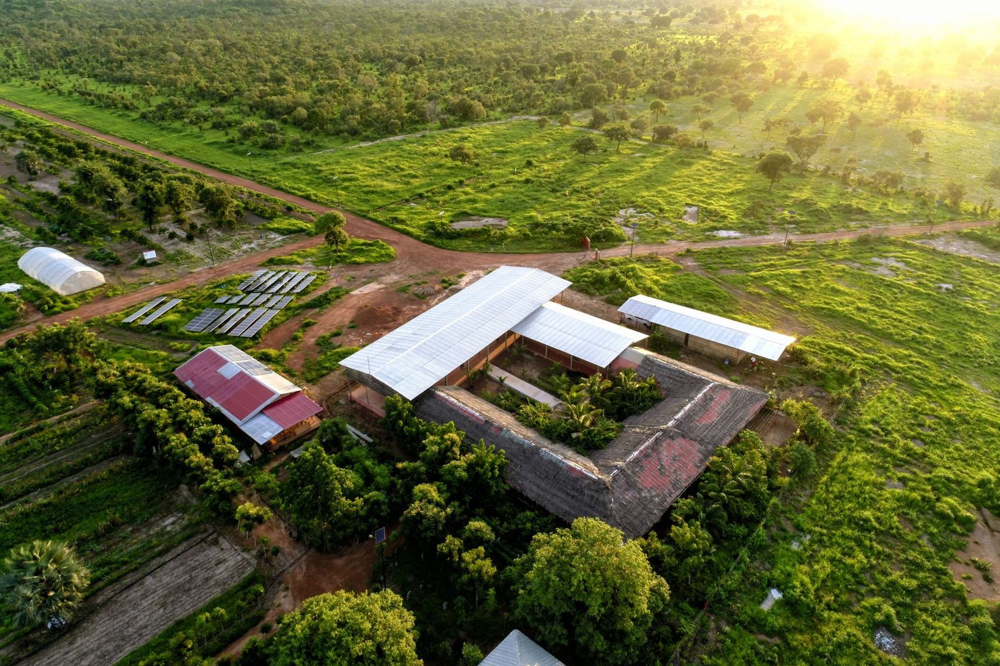
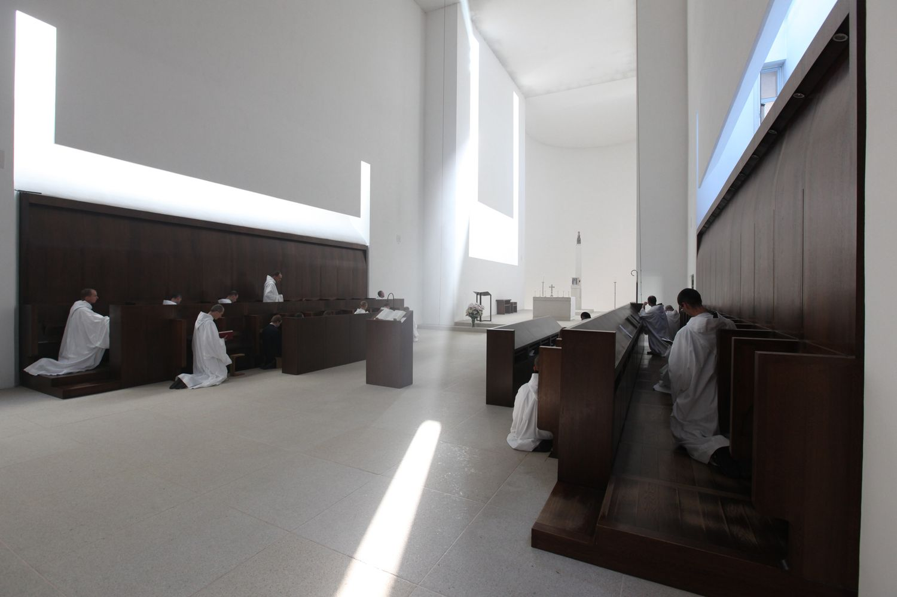
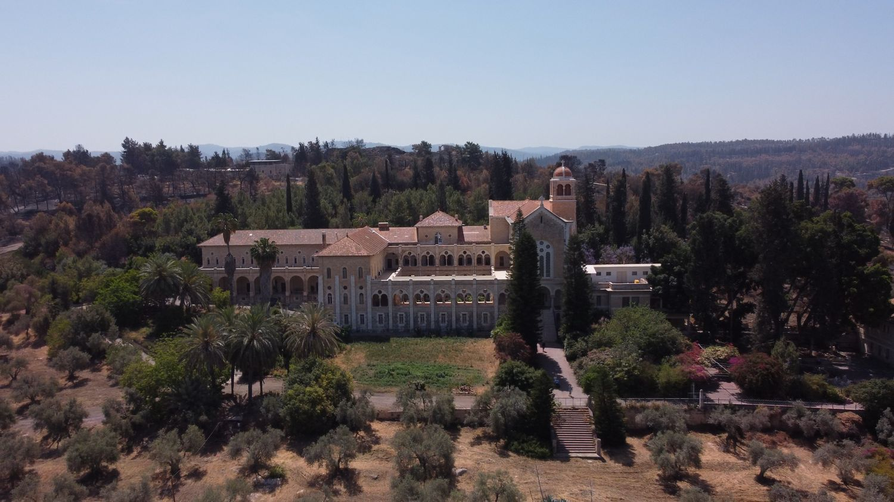
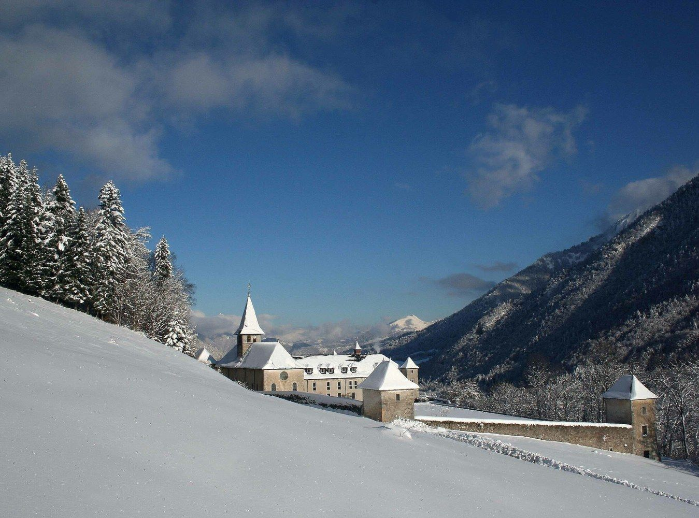
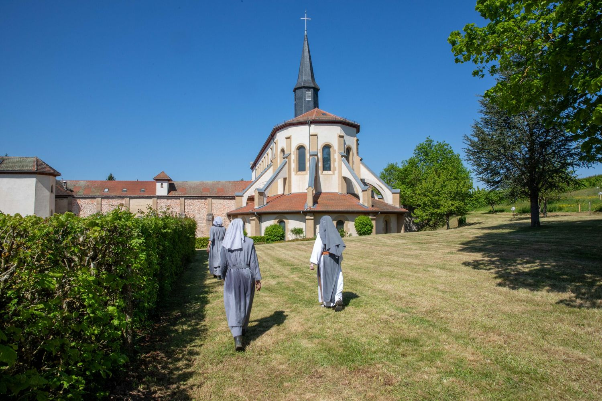

Découvrez les maisons filles de l’Abbaye Notre-Dame de Sept-Fons.

Bàdi
Fondation de l’abbaye de Sept-Fons, le monastère Notre-Dame de Bàdi a été implanté en 2017 dans la région de Tambacounda, à l’est du Sénégal. Il est né d’un lien ancien entre le monastère et le pays : les frères sénégalais formés à Sept-Fons font aujourd’hui partie de la communauté de Bàdi. La vie monastique cistercienne y est vécue dans le silence, la prière et le travail, au cœur des réalités locales.
Visitez le site de Bàdi
Nový Dvůr
En 1991, avec la chute du communisme dans les pays de l’Europe de l’Est, de jeunes candidats tchèques aspirant à la vie monastique, se sont présentés à l’abbaye de Sept-Fons. Onze plus tard, un monastère près de Plzen, dans la région montagneuse des Sudètes, a été construit dans un style moderne mais fidèle aux intuitions cisterciennes
Consultez le site de Nový Dvůr
Latroun
Fondée en 1890 par des moines cisterciens-trappistes venus de Sept-Fons, l’abbaye de Latroun est située en Terre Sainte, à proximité de Jérusalem. Au fil des décennies, la communauté a aménagé le domaine, construit le monastère et développé notamment la culture de la vigne et de l’olivier. Malgré les conflits qui ont marqué la région, les moines y poursuivent leur vocation de prière et de travail.
En savoir plus sur Latroun
Tamié
Fondée à partir de 1133 à proximité d’un col de la Tarentaise, l’Abbaye de Tamié porte avec elle un bel héritage : plus de huit cent cinquante ans d’histoire d’une abbaye « à l’écart sur la montagne »
Accédez au site de Tamié
Chambarand
Fondée en 1868 par des moines cisterciens-trappistes venus de Sept-Fons et de Mérignat, l’abbaye de Chambarand a accueilli successivement des communautés de moines et de moniales. En 2020, la Fraternité bernardine a repris le monastère et y poursuit aujourd’hui la tradition de prière et de vie contemplative.
Plus d’infos sur Chambarand